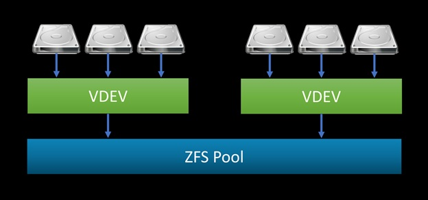

EXT3 EXT4 and ZFS
Ext3
- Ext3 stands for third extended file system.
- It was introduced in 2001. Developed by Stephen Tweedie.
- Starting from Linux Kernel 2.4.15 ext3 was available.
- The main benefit of ext3 is that it allows journaling.
-
Journaling has a dedicated area in the file system, where all the
changes are tracked. When the system crashes, the possibility of
file system corruption is less because of journaling.
- Maximum individual file size can be from 16 GB to 2 TB
- Overall ext3 file system size can be from 2 TB to 32 TB
-
You can convert a ext2 file system to ext3 file system directly
(without backup/restore).
Ext4
- Ext4 stands for fourth extended file system.
- It was introduced in 2008.
- Starting from Linux Kernel 2.6.19 ext4 was available.
-
Supports huge individual file size and overall file system size.
- Maximum individual file size can be from 16 GB to 16 TB
-
Overall maximum ext4 file system size is 1 EB (exabyte). 1 EB =
1024 PB (petabyte). 1 PB = 1024 TB (terabyte).
-
Directory can contain a maximum of 64,000 subdirectories (as
opposed to 32,000 in ext3)
-
You can also mount an existing ext3 fs as ext4 fs (without having
to upgrade it).
-
Has improved the performance and reliability of the filesystem
when compared to ext3.
-
In ext4, you also have the option of turning the journaling
feature “off”.
ZFS
The Z File System (ZFS) is an open-source logical volume manager and
file system created by Sun Microsystems, originally for its Solaris
operating system. It is now used in many operating systems including
FreeBSD, NetBSD, Mac OS X Server 10.5 and various Linux
distributions through ZFS-FUSE. Supports files and volumes of up to
16 Exabytes.
ZFS has three major design goals:
Performance: Through use of caching features.
Data integrity: All data includes a checksum of the data.
When data is written, the checksum is calculated and written along
with it. When that data is later read back, the checksum is
calculated again. If the checksums do not match, a data error has
been detected. ZFS will attempt to automatically correct errors when
data redundancy is available.
Pooled storage: physical storage devices are added to a pool,
and storage space is allocated from that shared pool. Space is
available to all file systems, and can be increased by adding new
storage devices to the pool.
